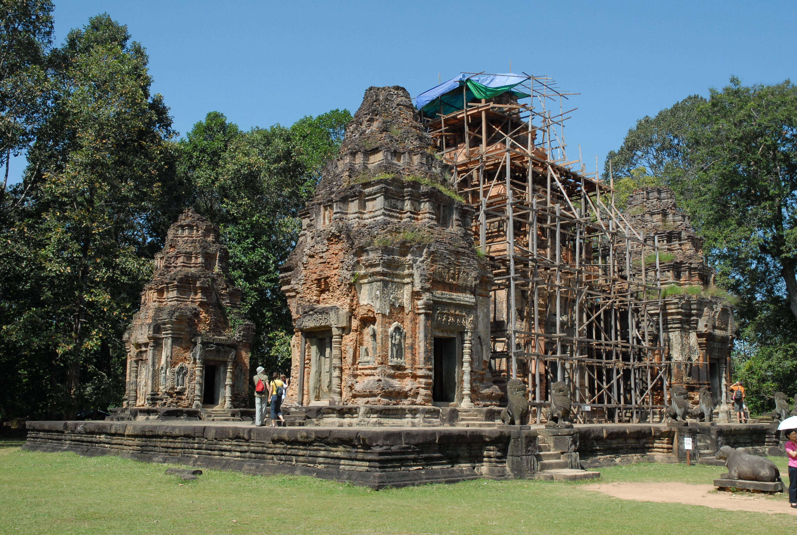
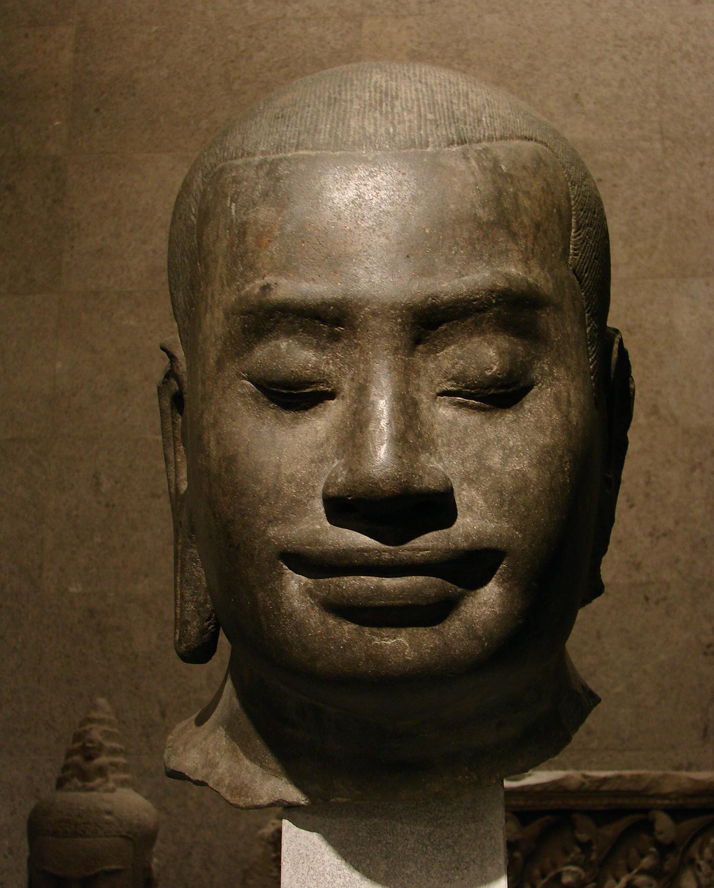

ប្រវត្តិស្តេចសម័យអង្គរ
ព្រះបាទជ័យវរ្ម័នទី២(ឆ្នាំ៨០២-៨៥០នៃគ.ស)

| រជ្ជកាល: | ៧៧០-៨៥០ (ចក្រភពខ្មែរ) |
| គ្រងរាជ: | ៨០២ - ៨៣៥ |
| ព្រះនាមពេញ: | ព្រះបាទ ដែនដីខាងជើង ព្រះកម្រតែងអញ ជ័យវរ្ម័នទេវរាជ |
| មរណៈនាម: | ព្រះបាទ បរមទេវរាជ |
| ក្សត្រមុន: | បុស្កៈរាជ |
| រាជបន្ត: | ឥន្ទ្រវរ្ម័នទី៣ |
| សន្តិវង្ស: | កៅណ្ឌិន្យ (អំបូរខ្មែរជ្វា) |
| ប្រសូត: | ៧៧០ |
| ចូលទីវង្គត់: | ៨៥០ (ជន្មាយុ ៨០ វស្សា) |
| បិតា | មិនមានការកត់ត្រា |
| មាតា | មិនមានការកត់ត្រា |
| ជំនឿ | ហិណ្ឌូសាសនា លទ្ធិ ព្រះវិស្ណុសាសនានិយម និង ព្រះសិវៈនិយម |
ព្រះបាទជ័យវរ្ម័នទី២ សោយរាជ្យពីឆ្នាំ៨០២-៨៥០នៃគ.ស។ ព្រះបាទជ័យវរ្ម័នទី២ ព្រះអង្គជាប់រាជបុស្កេរាក្ស។ ព្រះអង្គបានរំដោះប្រទេសជាតិពីពួកជ្វា ហើយព្រះអង្គកសាងរាជធានីជាច្រើនកន្លែងដូចជា រាជធានីឥន្ទ្របុរៈ រាជធានីកុតិ រាជធានីហរិហរាល័យ រាជធានីអមរេន្ទ្របុរៈ និងរាជធានីមហេន្ទ្របវ៌ត។ ព្រះអង្គបានបង្កើតពិធីទេវរាជ និងលើកតម្កើនព្រហ្មញ្ញសាសនា។ ព្រះអង្គបានកសាងប្រាសាទភ្នំគូលែន ប្រាសាទតោ ប្រាសាទអកយំ ប្រាសាទអារាមរោងចិន និងព្រះសិវលិង្គ។ ព្រះអង្គមានបុត្រមួយអង្គព្រះនាមព្រះបាទជ័យវរ្ម័នទី៣ ដែលបានសោយរាជ្យបន្តពីព្រះអង្គ[១]។ ព្រះបាទជ័យវរ្ម័នទី២ ព្រះអង្គសោយរាជ្យនៅក្នុងព.ស ១៣៤៥ ត្រូវនឹងឆ្នាំ៨០២នៃគ.ស ទ្រង់បានតាំងរាជធានីនៅភ្នំគូលែន។ កាលនោះទ្រង់និមន្តព្រាហ្មណ៍ម្នាក់ឈ្មោះ ហិរណ្យទាមៈឱ្យមកជួយរៀបហោមពិធីប្រកាសឯករាជ្យជាចក្រពត្រាធិរាជ ហើយលើកកិត្តិយសព្រះអង្គជាតួអង្គគឺជាព្រះហរិហរៈ។ ព្រះបាទជ័យវរ្ម័នទី២ជាព្រះមហាក្សត្រមួយអង្គប្រសើរក្រៃលែង ទ្រង់បាបង្រួបបង្រួមជាតិ ដែលបែកបាក់គ្នានោះឱ្យមកប្រទេសឯករាជ្យភាពវិញ[២]។ រវាងឆ្នាំ៨០២នៃគ.សមានព្រះមហាក្សត្រមួយព្រះអង្គ ដែលពួកជ្វាប្លន់ចាប់នាំយកទៅជាឈ្លើយទៅស្រុកជ្វា ដែលជ្វាចូលមកលុកលុយប្រទេសខ្មែរនៅឆ្នាំ៧៨៧នៃគ.សនោះ បានយាងមកត្រឡប់យករាជ្យសម្បត្តិវិញ ដោយច្បាំងដណ្តើមយកជ័យជំនៈអំពីពួកជ្វាវិញ។ បន្ទាប់មកព្រះអង្គឈប់យកសួយសារអាករទៅថ្វាយស្តេចជ្វាដូចមុនហើយ[៣]។ ព្រះបាទជ័យវរ្ម័នទី២ ត្រូវបានគេចាត់ទុកយ៉ាងទូលំទូលាយថាជាស្ដេចដែលបានបង្កើតឫសគល់នៃសម័យអង្គរក្នុងប្រវត្តិសាស្ត្រខ្មែរ ចាប់ផ្ដើមឡើងជាមួយក្បួនរីត៍ប្រសិទ្ធីយ៉ាងឱឡារិកធ្វើឡើងដោយជយវម៌្មទី២ (រជ្ជកាល៧៩០-៨៥០) ក្នុងឆ្នាំ ៨០២ លើភ្នំពិសិដ្ឋ មហេន្ទ្របវ៌ត បច្ចុប្បន្នត្រូវគេស្គាល់ថាជាភ្នំគូលែន ដើម្បីធ្វើពិធីប្រកាសឯករាជ្យពីការត្រួតត្រារបស់ជ្វា[៤]។ ក្នុងពិធីនេះ ព្រះបាទជ័យវរ្ម័នទី២ បានប្រកាសខ្លួនជា កម្រតេង ជគទ្តរាជ ជាភាសាខ្មែរឬ ទេវរាជ ជាភាសាសំស្ក្រឹត។ តាមរយៈប្រភពឯកសារខ្លះ ថាជយវម៌្មទី២បានគង់នៅជ្វាក្នុងពេលណាមួយកំឡុងរជ្ជកាលនៃពួកសៃលេន្ទ្រ រឺ ពួកស្ដេចភ្នំ ហេតុនេះហើយលទ្ធិទេវរាជ ត្រូវបាននាំចូលពីជ្វាត្រូវបានព្រះអង្គប្រកាសជាឱឡារិក។ ក្នុងសម័យនោះ ពួកសៃលេន្ទ្រតាមមើលទៅបានគ្រប់គ្រងលើកោះជ្វា កោះសមុរៈ ទៀបកោះម៉ាឡេនិងប៉ែកមួយចំនួននៃកម្វុជ[៥]។ ព្រះបាទជ័យវរ្ម័នទី២ មានឈ្មោះសម្រាប់រាជ្យថា ធូលីព្រះបាទ ធូលីជើងព្រះកម្រងតេងអញស្រីជ័យវរ្ម័នទេវៈ
បជ័យវរ្ម័នទី៣(គ.ស ៨៣៥-៨៧៧)
ជ័យវរ្ម័នទី៣ (អង់គ្លេស: Jeyvaraman III) (សំស្ក្រឹត: Jayavarman III) (ប្រ.ស|គ.ស ៨១២-៨៧៧) រជ្ជកាលគ្រងរាជ (គ.ស ៨៣៥-៨៧៧) មិនមានកំណត់ត្រារៀបអភិសេក និង មិនមានកំណត់ត្រាអំពីបុត្រស្នងរាជ្យឡើយ ។ ក្រោយទទួលរាជសម្បត្តិគ្រងរាជទ្រង់មានព្រះបរមនាមថា "វ្រះបាទ ធូលីជេង វ្រះកម្រតេង អញ ឝ្រីជយវម៌្មទេវ" ប្រែជាខេមរៈភាសា "ព្រះបាទដែនដីខាងជើង ព្រះកម្រតែងអញ ព្រះស្រីជ័យវរ្ម័នទេវៈ" ដែលមានរាជធានីឈ្មោះ "ហៈរិហៈរាល័យ" (Kh-pronoun: Hariharealay) & (Foreingners text: Hariharālaya) នៅតំបន់រលួស ខេត្តសៀមរាប ។ [១] ក្នងឆ្នាំ ៨៥០ នៃគ.ស ព្រះបាទ ជ័យវរ្ម័នទី៣ " ទ្រង់បានយាងទៅបោះព្រះពន្លាជ័យ នៅព្រៃមួយត្រង់ភ្នំបាខែង ហើយទ្រង់ទាក់បានដំរីមួយនិងបានចងទុកនៅជិតជំរុំរបស់ព្រះអង្គ ប៉ុន្តែដំរីនោះក៏ដោះខ្លួនបាន ហើយរត់ចូលព្រៃបាត់ ព្រះអង្គក៏ធ្វើពិធីបន់ស្រន់មួយដើម្បីរកឃើញដំរីនោះវិញ ហើយព្រះអង្គក៏រកដំរីនោះឃើញវិញ ។ [២] ក្នងឆ្នាំ ៨៥៧ នៃគ.ស ព្រះបាទ ជ័យវរ្ម័នទី៣ ដែលមានចំនូលចិត្តខាងប្រមាញ់សត្វព្រៃ និង ទាក់សត្វដំរី នៅតំបន់និរតីត្រង់ភ្នំបាខែង ទ្រង់បានបញ្ជារឱ្យនាយមុឺនសេនា ឆ្ការព្រៃដើម្បីសាងប្រាសាទមួយដើម្បីឧទ្ទិសថ្វាយ ព្រះនរាយ៍ ឬ ព្រះវិស្ណុ ដែលសព្វថ្ងៃហៅថា "ប្រាសាទគោកចក" ដែល្ថិតនៅ សង្កាត់គោកចក" ក្រុងសៀមរាប ។ [៣] ព្រះបាទ ជ័យវរ្ម័នទី៣ បានសោយទីវង្គត់នៅឆ្នាំ៨៧៧ នៃគ.ស ដោយគេសន្មត់ថាអាចស្លាប់ដោយសារការទាក់ដំរី ត្រូវដំរីចុះព្រេងជាន់ស្លាប់ ដោយព្រះអង្គទទួលមរណៈនាមថា "ព្រះបាទវិស្ណុលោក កម្រៈតេង ជ័យកុដ្តរាជ" ។

| រជ្ជកាល: | ៨៣៥-៨៧៧ (ចក្រភពខ្មែរ) |
| គ្រងរាជ: | ៨៣៥ |
| ព្រះនាមពេញ: | ព្រះបាទដែនដីខាងជើង ព្រះពេញ កម្រតែងអញ ព្រះស្រីជ័យវរ្ម័នទេវៈ |
| មរណៈនាម: | ព្រះបាទវិស្ណុលោក កម្រៈតេង ជ័យកុដ្តរាជ |
| ក្សត្រមុន: | ជ័យវរ្ម័នទី២ |
| រាជបន្ត: | ឥន្ទ្រវរ្ម័នទី១ |
| សន្តិវង្ស: | កៅណ្ឌិន្យ (អំបូរខ្មែរជ្វា) |
| ប្រសូត: | ៨១២ |
| ចូលទីវង្គត់: | ៨៧៧ (ជន្មាយុ ៦៥ វស្សា) |
| បិតា | ជ័យវរ្ម័នទី២ |
| មាតា | ធរណីន្ទ្រទេវី |
| ជំនឿ | ហិណ្ឌូសាសនា លទ្ធិ ព្រះវិស្ណុសាសនានិយម និង ព្រះសិវៈនិយម |
ឥន្ទ្រវរ្ម័នទី១(គ.ស ៨៧៧-៨៨៩)

| រជ្ជកាល: | ៨៧៧-៨៨៩ (ចក្រភពខ្មែរ) |
| គ្រងរាជ: | ៨៧៧ |
| ព្រះនាមពេញ: | ព្រះបាទដែនដីខាងជើង ព្រះកម្រតែងអញ ព្រះស្រីជ័យវរ្ម័នទេវៈ |
| មរណៈនាម: | ព្រះបាទឥសីស្វារៈលោក |
| ក្សត្រមុន: | ជ័យវរ្ម័នទី៣ |
| រាជបន្ត: | យសោវរ្ម័នទី១ |
| សន្តិវង្ស: | កៅណ្ឌិន្យ (អំបូរខ្មែរជ្វា) |
| ប្រសូត: | មិនមានកំណត់ត្រា |
| ចូលទីវង្គត់: | ៨៩០ (ជន្មាយុ មិនមានការកត់ត្រា) |
| ភរិយា | ឥន្ទ្រទេវី |
| បុត្រ | ជ័យទេវី - យសោវរ្ម័នទី១ - មហិន្ទ្រទេវី |
| បិតា | ប្រថិវិន្ទ្រវរ្ម័ន |
| មាតា | ប្រថិវិន្ទ្រទេវី |
| ជំនឿ | ហិណ្ឌូសាសនា លទ្ធិ ព្រះវិស្ណុសាសនានិយម និង ព្រះសិវៈនិយម |
ឥន្ទ្រវរ្ម័នទី១ (អង់គ្លេស: Indravaraman I) (សំស្ក្រឹត: Indravarman I) (ប្រ.ស|គ.ស 000-៨៩០) រជ្ជកាលគ្រងរាជ (គ.ស ៨៧៧-៨៨៩) ក្រោយទទួលរាជសម្បត្តិគ្រងរាជទ្រង់មានព្រះបរមនាមថា "ធូលីវ្រះបាទ ធូលិជេងវ្រះកម្រតេង អញឝ្រិន្ទ្រវម៌្មទេវ" ប្រែជាខេមរៈភាសា "ព្រះបាទដែនដីខាងជើង ព្រះកម្រតែងអញ ស្រិន្ទ្រវរ្ម័នទេវៈ" ដែលមានរាជធានីឈ្មោះ "ហៈរិហៈរាល័យ" (Kh-pronoun: Hariharealay) &(Foreingners text: Hariharālaya) នៅតំបន់រលួស ខេត្តសៀមរាប ។ [២] ព្រះបាទ ឥន្ទ្រវរ្ម័នទី១ ត្រូវជាបងប្អូនជីដូនមួយនិងព្រះបាទ ជ័យវរ្ម័នទី៣ ផងដែរ ជាចុងក្រោយនៃ ស.វទី៩ ដែលទ្រង់បានប្រគល់រាជសម្បត្តិរបស់ទ្រង់ទៅកូនរបស់ខ្លួនព្រះនាម "យសោវរ្ម័នទី១" ក្នុងឆ្នាំ ៨៨៩ នៃគ.ស ហើយជាពេលដែលកូនរបស់ទ្រង់បានស្ថាបនាទីក្រុងអង្គរធំឡើង នៃឬសគល់ ក្នុងការបង្កើតចក្រភពអង្គរនាដើម ស.វទី១០ ដែលជាសម័យកាលដ៏មានឥទ្ធិពលមួយរបស់ជាតិសាសន៍ខ្មែរ នាភូមិភាគអាសុីគ្នេយ៍នេះ ។
ព្រះបាទជ័យវម៌្មទី៧(គ.ស ១១៨១-១២១៨)
ជ័យវរ្ម័នទី៧ (អង់គ្លេស: Jeyvaraman VII) (សំស្ក្រឹត: Jayavarman VII) (ប្រ.ស|គ.ស ១១២៥-១២១៨) រជ្ជកាលគ្រងរាជ (គ.ស ១១៨១-១២១៨) ក្រោយគ្រងរាជសម្បត្តិផ្លូវការណ៍ក្នុងឆ្នាំ ១១៨១ នៃគ.សករាជ ទ្រង់មាន ព្រះបរមនាមថា "ជយវម៌្មអវតាលោកេរស្វរ" ប្រែជាខេមរៈភាសា "ជ័យវរ្ម័នអវតារលោកកេរស្វរៈ" ព្រះអង្គជាស្ដេចខ្មែរដ៏ខ្លាំងពូកែមួយព្រះអង្គដែលរើបំរាសពីការត្រួតត្រា របស់រាជវង្ស ចាម ដែលមកពីភាគកើតកម្ពុជា គឺ អាណាចក្រចាម្ប៉ា ហើយព្រះអង្គដែលជាស្ដេចសឹកខ្លាំងពូកែ ដែលត្រួតត្រាអាស៊ីអាគ្នេយ៍ដីគោកមួយភាគធំ ព្រះអង្គជាបុត្ររបស់ព្រះបាទ ធរណីន្ទ្រវរ្ម័នទី២ និងបានរៀបអភិសេក អគ្គមហេសី ២អង្គ គឺ ព្រះនាង ជ័យរាជទេវី និង ព្រះនាងឥន្ទ្រទេវី ហើយទ្រង់មានបុត្រាបុត្រី ៦អង្គ, បុត្រទី១ ព្រនាម សូរ្យកុមារ, បុត្រទី២ នាម ឥន្ទ្រវរ្ម័នទី២ , បុត្រទី៣ នាម ឝ្រីឥន្ទ្រកុមារ ជាបុត្ររបស់ ជ័យរាជទេវី ដែលជាមហេសីទី១ បុត្រទី៤ នាម វីរៈកុមារ, បុត្រទី៥ ព្រះភិក្ខុគមលិន្ត ជាបុត្ររបស់ ឥន្ទ្រទេវី ដែលជាមហេសីទី២ បុត្រទី៦ នាម ស្រីសុខរមហាទេវី ជាបុត្រីរបស់ស្នំឯក ហើយបុត្រដែលឡើងសោយរាជបន្តពីទ្រង់គឺព្រះបាទ ឥន្ទ្រវរ្ម័នទី២ ដែលជាបុត្រទី២របស់ទ្រង់ ។

| រជ្ជកាល: | ១១៨១ (ចក្រភពខ្មែរ) |
| គ្រងរាជ: | ១១៨១/td> |
| ព្រះនាមពេញ: | ជ័យវរ្ម័នអវតារលោកកេរស្វរៈ(ជ័យវរធន់) |
| មរណៈនាម: | ព្រះបរមសៅសុគតបទ |
| ក្សត្រមុន: | ត្រីភូវនាទិត្យវរ្ម័ន |
| រាជបន្ត: | ឥន្ទ្រវរ្ម័នទី២ |
| សន្តិវង្ស: | កៅណ្ឌិន្យ (អំបូរខ្មែរជ្វា) |
| ប្រសូត: | ១១២៥ |
| ចូលទីវង្គត់: | ១២១៨ (ជន្មាយុ ៩៣ ព្រះវស្សា) |
| ភរិយា | ឥន្ទ្រទេវី - ជយរាជទេវី - រាជេន្ទ្រទេវី - ព្រះស្នំ |
| បុត្រ | សូរ្យកុមារ - ព្រះបាទឥន្ទ្រវរ្ម័នទី២ - វីរៈកុមារ - ស្រីសុខរមហាទេវី - ឝ្រីឥន្ទ្រកុមារ - ព្រះភិក្ខុគមលិន្ត |
| បិតា | ធរណីន្ទ្រវរ្ម័នទី២ |
| មាតា | សុដាមណី |
| ជំនឿ | ព្រហ្មញ្ញសាសនា - ព្រះពុទ្ធសាសនា មហាយាន |